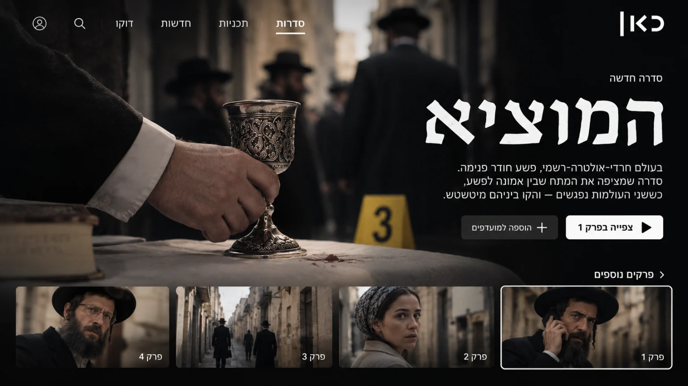
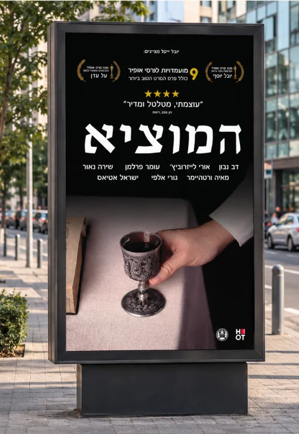
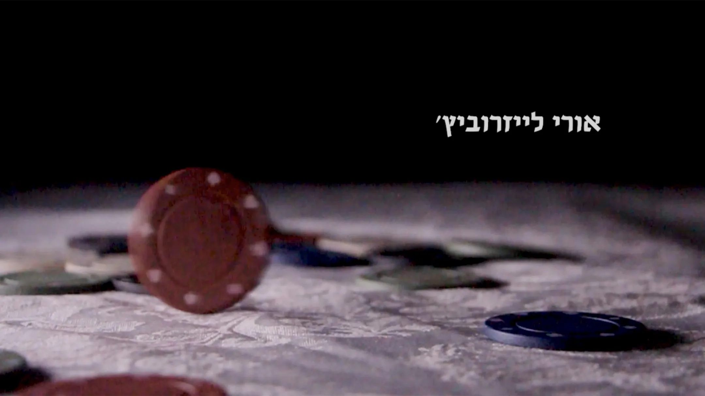
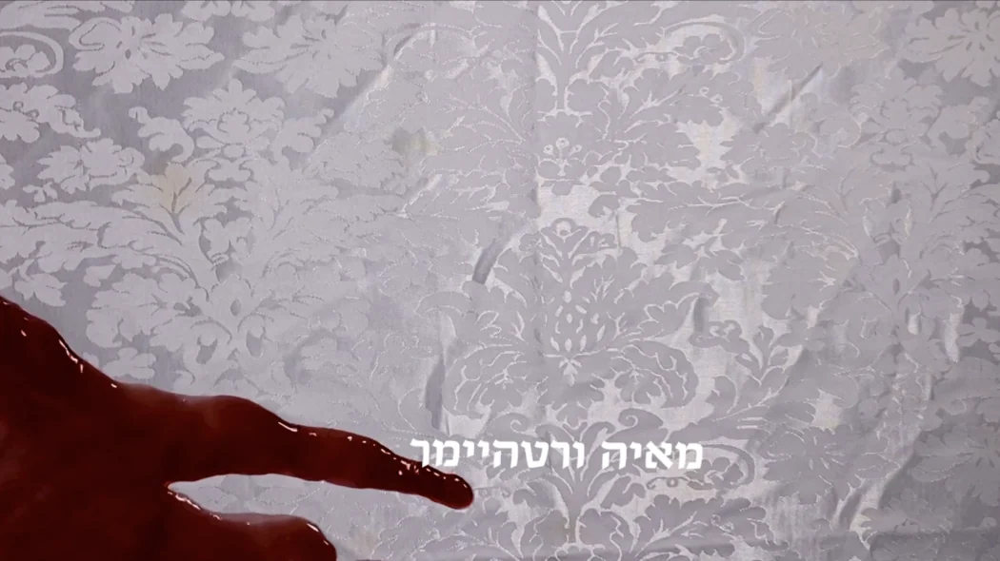
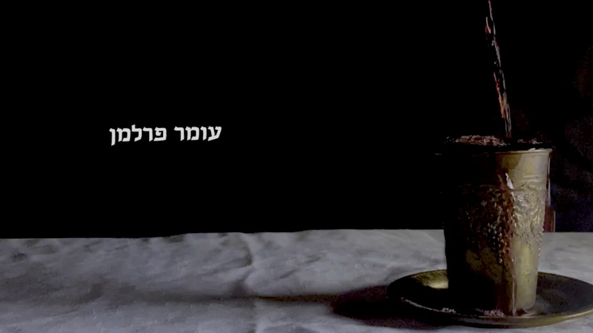
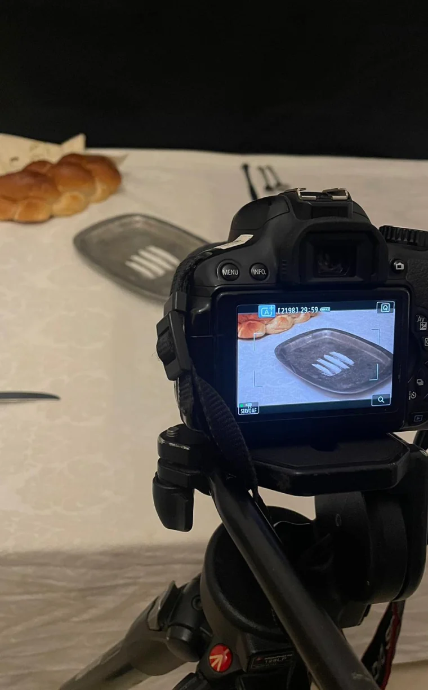
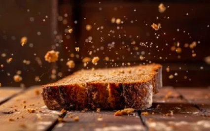
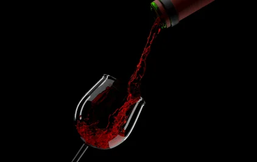
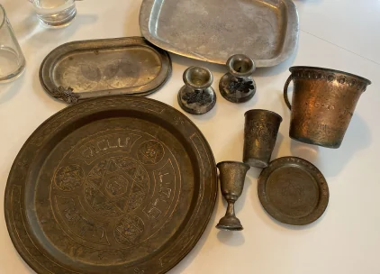

Working on the comparisons




some of the process






Working on the comparisons



some of the process




hamotzi
Video art
direction & filming
student project
2024
A title sequence for a fictional TV series. Drawing the viewer into an ultra religious world of crime showcasing complexity of a layered world.
The sequence explore where faith and crime meet, comparing the two worlds through shared gestures, objects, and rituals until the line between them blurs.
Throughout the project, we were faced with some challenges. The main one was showing where faith and crime meet in an ultra religious world, without flattening its complexity. With that in mind, finding where the two worlds compare through shared gestures until the line between them blurs. 3 values led us throughout this project helping us make creative decisions- Insight, Respect and drama.
Working on the comparisons
Within this joint project, I took lead on the filming and editing and set building. Together with my partner, we built a concept, synopsis and detailed storyboard.
some of the process